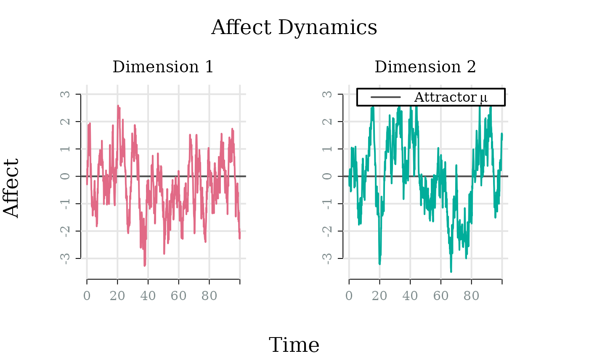
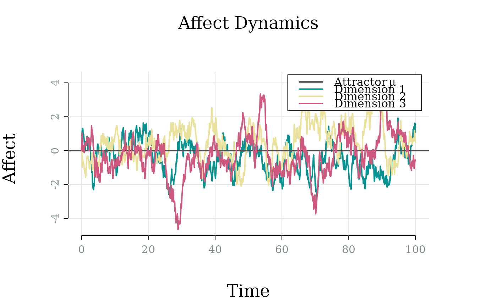

Create a model object representing an Ornstein-Uhlenbeck (OU) process for affect dynamics. Both unidimensional and multidimensional models are supported.
Arguments
- ndim
Dimensionality of the affect process. Defaults to 1 (univariate). Only needs to be specified if it cannot be inferred from the dimensions of the other parameters.
- theta
Attractor strength (rate of return to baseline). For 1D: positive scalar. For multidimensional: square matrix.
- mu
Attractor location (baseline affect / set point). For 1D: scalar. For multidimensional: vector. For non-stationary models: when \(\theta < 0\), the process is pushed away from \(\mu\) rather than toward it; when \(\theta \approx 0\), \(\mu\) has no meaningful influence on the trajectory.
- gamma
Diffusion coefficient (multiplies \(dW(t)\) in the SDE). For 1D: positive scalar. For multidimensional: matrix. Either
gammaorsigmamust be specified, but not both. Ifgammais specified,sigmais computed as \(\Sigma = \Gamma\Gamma^\top\).- sigma
Noise covariance matrix (\(\Sigma = \Gamma\Gamma^\top\)). For 1D: positive scalar (variance). For multidimensional: positive semi-definite matrix. Off-diagonal elements represent correlated noise between dimensions. Either
gammaorsigmamust be specified, but not both. Ifsigmais specified,gammais computed via Cholesky decomposition.- initial_state
Starting value of affect. For 1D: scalar. For multidimensional: vector. Defaults to
mu.
Value
An object of class affectOU, representing a univariate or multivariate
Ornstein–Uhlenbeck (OU) affect regulation model.
The object is a list with the following components:
parametersA named list of model parameters:
thetaNumeric matrix. Mean reversion / regulation strength.
muNumeric vector. Attractor location / affective set point.
gammaNumeric matrix. Diffusion coefficient (multiplies dW(t)).
sigmaNumeric matrix. Noise covariance (\(\Sigma = \Gamma\Gamma'\)).
initial_stateNumeric vector indicating the starting value of the affect process used for simulation.
ndimInteger indicating the dimensionality of the process.
Details
Continuous-time stochastic differential equation model for affect regulation. The OU process models affect as a mean-reverting process with: $$dX(t) = \theta(\mu - X(t))dt + \gamma dW(t)$$ for the 1D case, or $$dX(t) = \Theta(\mu - X(t))dt + \Gamma dW(t)$$ for the multidimensional case.
where:
\(\theta / \Theta\) (theta): attractor strength / regulation speed (scalar or matrix)
\(\mu\) (mu): attractor location / set point (scalar or vector)
\(\gamma / \Gamma\) (gamma): diffusion coefficient that multiplies dW(t)
\(\sigma / \Sigma\) (sigma): noise covariance matrix, computed as \(\Sigma = \Gamma\Gamma'\)
Different \(\Gamma\) matrices that yield the same \(\Sigma\) produce statistically identical processes, so \(\Sigma\) (not \(\Gamma\)) determines the model's behaviour.
In the multidimensional case, the element \(\Theta_{ij}\) (row \(i\), column \(j\)) represents the influence of dimension \(j\) on dimension \(i\)'s drift. Specifically, the drift for dimension \(i\) is \(\sum_j \Theta_{ij}(\mu_j - X_j)\):
Diagonal elements \(\Theta_{ii}\): self-regulation (how fast dimension \(i\) returns to its own attractor \(\mu_i\)). Positive values are necessary for self-regulation, but strong cross-regulation can override this and destabilise the system (see summary() for system-level stability checks).
Off-diagonal elements \(\Theta_{ij}\) where \(i \neq j\): cross-regulation (how dimension \(j\) influences dimension \(i\)). If \(\Theta_{ij} > 0\), dimension \(j\) below its attractor has a positive influence on dimension \(i\) (pulls it up); if \(\Theta_{ij} < 0\), dimension \(j\) below its attractor has a negative influence on dimension \(i\) (pushes it down).
References
Oravecz, Z., Tuerlinckx, F., & Vandekerckhove, J. (2011). A hierarchical latent stochastic differential equation model for affective dynamics. Psychological Methods, 16(4), 468-490.
See also
The returned object can be inspected with print(), summary(), stability(), stationary(), and coef(), can be simulated over time with simulate(), and fitted to data with fit()
Examples
# 1D model
model_1d <- affectOU(theta = 0.5, mu = 0, gamma = 1)
summary(model_1d)
#>
#> ── 1D Ornstein-Uhlenbeck Model ─────────────────────────────────────────────────
#>
#> ── Dynamics ──
#>
#> Stable (node)
#>
#> ── Stationary distribution ──
#>
#> Mean: 0
#> SD: 1
#> Half-life: 1.386
#> Relaxation time (τ): 2
coef(model_1d)
#> $theta
#> [1] 0.5
#>
#> $mu
#> [1] 0
#>
#> $gamma
#> [1] 1
#>
#> $sigma
#> [1] 1
#>
# 2D model (uncoupled)
model_2d <- affectOU(
ndim = 2, theta = diag(c(0.5, 0.3)), mu = 0,
gamma = 1
)
summary(model_2d)
#>
#> ── 2D Ornstein-Uhlenbeck Model ─────────────────────────────────────────────────
#>
#> ── Dynamics ──
#>
#> Stable (node)
#>
#> ── Stationary distribution ──
#>
#> Mean: [0, 0]
#> SD: [1, 1.291]
#> Half-life: [1.386, 2.31]
#> Relaxation time (τ): [2, 3.333]
#>
#> ── Structure ──
#>
#> Coupling: none
#> Noise: independent
# Simulate trajectory
sim <- simulate(model_2d, stop = 100, save_at = 0.1)
plot(sim)

# 3D model (coupled)
theta_3d <- matrix(c(
0.5, 0.1, 0,
0.1, 0.3, 0.05,
0, 0.05, 0.4
), nrow = 3)
model_3d <- affectOU(
ndim = 3, theta = theta_3d,
mu = 0, gamma = 1
)
summary(model_3d)
#>
#> ── 3D Ornstein-Uhlenbeck Model ─────────────────────────────────────────────────
#>
#> ── Dynamics ──
#>
#> Stable (node)
#>
#> ── Stationary distribution ──
#>
#> Mean: [0, 0, 0]
#> SD: [1.036, 1.351, 1.131]
#> Half-life: [1.53, 2.605, 1.788]
#> Relaxation time (τ): [2.24, 3.796, 2.59]
#>
#> ── Structure ──
#>
#> Coupling: Dim 1 → Dim 2 (+), Dim 2 → Dim 1 (+), Dim 2 → Dim 3 (+), Dim 3 → Dim
#> 2 (+)
#> Noise: independent
# Simulate trajectory
sim_3d <- simulate(model_3d, stop = 100, save_at = 0.1)
plot(sim_3d)
